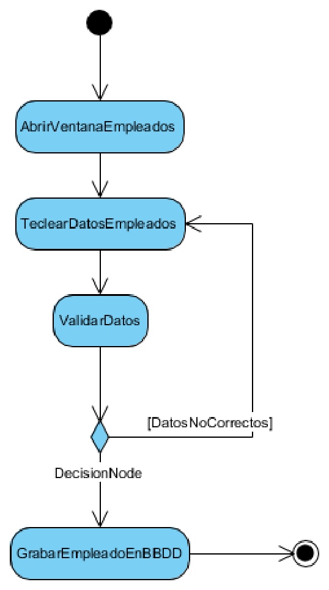

El diagrama de actividades
El diagrama de actividades describe un comportamiento complejo en forma de secuencias condicionales de actividades componentes. Dicho de otra forma, cuenta qué pasos se siguen para llevar a cabo un proceso, desde un punto de inicio hasta un punto final, y detalla las decisiones que surgen por el camino. Es, en la práctica, el heredero directo del diagrama de flujo clásico, con una notación bastante más rica que la de su antecesor.
Ese parentesco con el diagrama de flujo tiene una ventaja y un riesgo. La ventaja es que casi todo el mundo lo entiende a la primera, incluso quien no ha visto UML en su vida: un rectángulo es un paso, un rombo es una decisión y una flecha indica por dónde se sigue. El riesgo es precisamente ese, que resulta tan familiar que se dibuja sin pensar, y entonces se convierte en un diagrama de flujo de los años ochenta: pasos, decisiones y nada más. La notación de UML añade piezas que el diagrama de flujo no tenía (responsables, acciones concurrentes, datos que se producen y se consumen) y son justo esas piezas las que convierten el dibujo en un modelo útil.
Su campo de aplicación es el de los procesos. Sirve para describir un algoritmo antes de programarlo, para documentar el procedimiento que sigue un departamento o para mostrar el recorrido completo de una operación de negocio. Su gran ventaja sobre el diagrama de secuencia es que no necesita saber qué objeto ejecuta cada paso: cuando lo importante es el "qué se hace" y no el "quién lo hace", este es el diagrama adecuado.
Los elementos del diagrama
El diagrama de actividades tiene un vocabulario corto, pero con matices que conviene distinguir para no quedarse en el diagrama de flujo de siempre.
El nodo inicial se dibuja como un círculo relleno y marca por dónde empieza el proceso. Solo puede haber uno, y esa restricción no es arbitraria: un proceso con dos entradas distintas son en realidad dos procesos que comparten un tramo, y conviene modelarlos por separado. El nodo final de actividad se dibuja como un círculo rodeado por un anillo y marca el final del proceso completo, y puede haber más de uno, porque un proceso puede terminar de varias maneras distintas. Existe además el nodo final de flujo, que termina un camino concreto sin dar por terminado el proceso entero, y que se usa cuando un camino se agota mientras los demás siguen vivos.
Una acción es un paso del proceso, y se dibuja como un rectángulo de esquinas redondeadas con el nombre del paso en su interior. La diferencia entre acción y actividad es de granularidad: una acción se considera atómica y una actividad podría descomponerse en otras, pero en la práctica se dibujan igual y la distinción afecta más al nivel de detalle elegido que a la notación. El criterio práctico es el del lector: si quien va a leer el diagrama necesita saber cómo se hace un paso, ese paso es una actividad y quizá merezca su propio diagrama; si le basta con saber que se hace, es una acción.
El flujo de control es la flecha que une dos elementos y marca el orden en que se ejecutan. Dibujar la flecha es escribir la palabra "después", y por eso un diagrama que las encadena todas en línea recta está afirmando que el proceso es estrictamente secuencial, algo que rara vez es cierto y que conviene comprobar antes de darlo por bueno.
Las decisiones y las uniones se representan con un rombo. En el rombo de decisión entra un flujo y salen varios, cada uno etiquetado con la condición que lo activa; en el rombo de unión entran varios flujos y sale uno, indicando que los caminos vuelven a converger. Ese rombo es la pieza que convierte una lista de tareas en un procedimiento real con caminos alternativos, y su etiqueta es la información más valiosa del diagrama: obliga a escribir por escrito la condición que nadie había formulado, que es exactamente donde aparecen los requisitos que faltaban.
La bifurcación y la convergencia, dibujadas con una barra gruesa en lugar de un rombo, representan concurrencia. Una bifurcación divide el flujo en varios caminos que se ejecutan en paralelo, y una convergencia espera a que todos ellos hayan terminado antes de continuar. Es importante no confundir este símbolo con el rombo, porque la diferencia es enorme y el error es frecuente: el rombo elige un camino y descarta los demás, mientras que la barra los ejecuta todos a la vez. Un diagrama que use el rombo donde hacía falta la barra está describiendo un proceso que hace las cosas de una en una, y en el código eso se traduce en un programa mucho más lento del que se pretendía.
Las particiones, también llamadas calles o swimlanes, son las franjas verticales u horizontales que reparten las acciones entre responsables. Cuando en un diagrama aparecen dos o tres franjas con nombres, cada acción se coloca en la franja de quien la ejecuta, y de ese modo el mismo diagrama sirve para mostrar el proceso y para repartir el trabajo. Es la forma de añadir el "quién" sin renunciar a la simplicidad del "qué", y es una de las piezas que diferencia este diagrama del viejo diagrama de flujo.
Por último, los nodos de objeto representan datos que se producen o se consumen en un paso del proceso, y las señales de recepción y envío representan esperas y notificaciones externas, útiles cuando el proceso depende de que llegue algo desde fuera, como un fichero, un correo o la respuesta de otro sistema.
Un ejemplo de referencia

El diagrama describe la inserción de un empleado en la base de datos, y es exactamente el mismo escenario que ya vimos como diagrama de secuencia. El proceso arranca en el nodo inicial, ejecuta la acción AbrirVentanaEmpleados, después TeclearDatosEmpleado y a continuación ValidarDatos. Llegados a ese punto aparece el rombo de decisión: si los datos no son correctos, etiquetado con [DatosNoCorrectos], el flujo vuelve al paso de teclear los datos; si son correctos, continúa hacia GrabarEmpleadoEnBBDD, que es la última acción antes del nodo final.
La comparación con el diagrama de secuencia deja ver la diferencia de enfoque entre los dos. Aquí no hay objetos ni mensajes: hay pasos y condiciones. El diagrama responde a la pregunta de qué hay que hacer y en qué orden, y la respuesta es independiente de si el programa se implementa con una ventana, dos ventanas o una llamada a un servicio web. Esa independencia es a la vez su virtud, porque permite discutir el proceso con quien no programa, y su límite, porque no dice nada sobre cómo se reparte el trabajo entre las clases.
Hay un detalle del diagrama que merece comentario, y es el camino de retorno. El flujo, cuando la validación falla, vuelve al paso anterior en lugar de terminar con un error. Esa decisión se toma al dibujar y tiene consecuencias directas: significa que el programa tiene que quedarse esperando datos nuevos, y que quien lo use puede intentarlo tantas veces como quiera. Si el proceso tuviera que rendirse tras tres intentos fallidos, el diagrama necesitaría una segunda decisión que contase los intentos, y esa condición no está en el enunciado porque nadie la había pensado. Dibujar el camino de retorno es lo que hace visible la pregunta.
Cómo se elabora un diagrama de actividades
Para construirlo se parte otra vez del escenario, y se escriben primero los pasos en una lista, sin dibujar nada. Solo después se trasladan a la notación, y es en ese momento cuando se descubren los vacíos del relato: casi siempre aparece al menos una decisión que el escenario había dado por supuesta.
Recuperemos el escenario de registro de una factura de servicios y añadámosle las condiciones que un caso real exige. El gestor registra la factura, el sistema comprueba que el cliente existe en el catálogo, después calcula el importe a partir de las horas y del precio por hora, y finalmente emite la factura. Si el cliente no existe, hay que darlo de alta antes de continuar.
flowchart TD
Inicio([Inicio]) --> Alta["Registrar factura"]
Alta --> Existe{"¿Existe el cliente?"}
Existe -- No --> Crear["Dar de alta el cliente"]
Crear --> Calcular["Calcular importe"]
Existe -- Sí --> Calcular
Calcular --> Emitir["Emitir factura"]
Emitir --> Fin([Fin])Leyendo el diagrama resultante se entiende por qué este paso es tan útil antes de programar. En el enunciado original no había ninguna mención a qué hacer cuando el cliente no existe, y ese caso, que en la práctica es el más habitual durante las primeras semanas de uso del sistema, se ha vuelto visible al dibujarlo. Esa es la clase de laguna que se descubre tarde y caro si el proceso solo se ha discutido de palabra.
El mismo proceso, dibujado con particiones, responde además a la pregunta de quién hace cada cosa. El diagrama siguiente reparte las acciones entre dos responsables, y ese reparto es información que el diagrama anterior no contenía:
flowchart TD
subgraph REC["Recepción"]
Llegada([Llegada de la mascota]) --> Registrada{"¿Está registrada?"}
Registrada -- No --> Dar["Dar de alta a la mascota"]
Dar --> Clasificar["Clasificar la urgencia"]
Registrada -- Sí --> Clasificar
end
subgraph VET["Veterinario"]
Grave{"¿Es una urgencia grave?"}
Espera["Pasar a la sala de espera"]
Consulta["Atender en consulta"]
Cobrar["Cobrar la visita"]
Fin([Fin])
end
Clasificar --> Grave
Grave -- No --> Espera
Espera --> Consulta
Grave -- Sí --> Consulta
Consulta --> Cobrar
Cobrar --> FinLas franjas se han dibujado aquí como bloques que agrupan las acciones, porque es la forma en que la notación se puede representar en un documento de este tipo. La lectura es la misma que con franjas verticales: cada acción pertenece al responsable cuya franja la contiene, y los flujos que cruzan de una franja a otra son los traspasos de responsabilidad, que es donde se producen la mayoría de los errores de un proceso. Si un traspaso no está definido con precisión (quién avisa, con qué información y cuándo), el proceso se rompe en ese punto aunque el diagrama parezca completo.
Y hay una pregunta que este dibujo deja al descubierto y que el enunciado no respondía: cuando la mascota no está registrada, el diagrama da por hecho que recepción puede darla de alta. Si el sistema no lo permite, hace falta un camino alternativo, y si lo permite, hace falta decidir con qué datos y con qué autorización. Ninguna de las dos cosas estaba dicha, y ahora están escritas en un papel que se puede discutir.
El campo de aplicación
El diagrama de actividades es especialmente valioso en tres situaciones. La primera es la de los procesos de negocio, porque permite dibujarlos con un lenguaje que el cliente entiende y sirve de base para acordar responsabilidades. La segunda es la de los algoritmos con muchas ramificaciones, donde el diagrama sustituye con ventaja a un pseudocódigo mal formateado. Y la tercera es la de los procesos con partes concurrentes, porque el símbolo de bifurcación expresa en un solo trazo lo que en prosa requiere un párrafo.
En las tres situaciones, el diagrama aporta el mismo tipo de valor: convierte un procedimiento que vive en la cabeza de una persona en un objeto que se puede revisar. Y ese es el motivo de que se use tanto en la documentación de entrega. Un manual de procedimiento escrito en prosa obliga a leerlo entero para entender el orden; el diagrama se lee de un vistazo y, sobre todo, muestra de inmediato qué pasa cuando algo falla, que es la parte de un procedimiento que el texto escrito casi siempre se salta.
Conviene, en cambio, no utilizarlo para describir el comportamiento de un objeto concreto. Cuando lo que interesa es qué situaciones atraviesa un pedido y qué las provoca, el diagrama de actividades obliga a dibujar el proceso entero, mientras que el diagrama de estados se centra en el objeto y en su ciclo de vida. Esa es precisamente la herramienta que se describe a continuación.